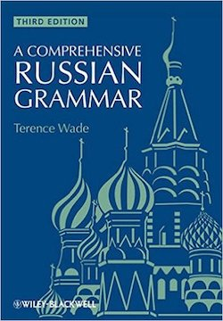

Resources
Tools
Anki is a very widely-used tool for language learning. At it's core, it's a spaced repetition learning application. I use Anki daily both for memorizing vocabulary and for practicing grammar as applied to example sentences and other snippets.
Books
Beginning courses
• New Penguin Russian Course: A complete course for beginners (NPRC)
This is a very frequently used text for self-study. It's very dense and organized into 30 lessons of varying length. Some lessons are much more complicated than others. Some subjects like the verbs of motion aren't as thoroughly-treated as they should be. But this is a good "spine" for studying the Russian language.
Grammar books
A Comprehensive Russian Grammar (CRG) by Terence Wade

A well-regarded text of Russian Grammar, the Wade book is a good upgrade from the basic general course material. That said, I've found several editing errors.
The Wade grammar text has a compain exercise book with practice questions. While I have a copy, as of February 2017, I haven't had enough time to go through it yet.